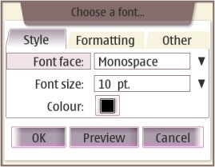

hildon.FontSelectionDialog

A widget is used to select a font with certain properties
Description
Font selection dialog provides the user with the possiblity to choose a different font family, font size, font color, font weight (bold or not bold), font style (italic or not italic), underline, strikethrough, and position (normal, superscript or subscript).
Ancestry
Up to the first non-hildon ancestor:
...
+-- gtk.Dialog
+-- hildon.FontSelectionDialog
Usage Example
#!/usr/bin/env python2.5
import gtk
import hildon
def font_selected(widget, label, fontDialog):
fontDialog.run()
fontDialog.hide()
if fontDialog.get_property("family-set"):
family = fontDialog.get_property("family")
else:
family = "Not set"
if fontDialog.get_property("size-set"):
size = fontDialog.get_property("size")
else:
size = "Not set"
if fontDialog.get_property("color-set"):
gdk_color = fontDialog.get_property("color")
color = "(R:%s, G:%s, B:%s)" % (gdk_color.red, gdk_color.green, gdk_color.blue)
else:
color = "Not set"
if fontDialog.get_property("bold-set"):
bold = fontDialog.get_property("bold")
else:
bold = "Not set"
if fontDialog.get_property("italic-set"):
italic = fontDialog.get_property("italic")
else:
italic = "Not set"
if fontDialog.get_property("underline-set"):
underline = fontDialog.get_property("underline")
else:
underline = "Not set"
if fontDialog.get_property("strikethrough-set"):
strikethrough = fontDialog.get_property("strikethrough")
else:
strikethrough = "Not set"
if fontDialog.get_property("position-set"):
position = fontDialog.get_property("position")
else:
position = "Not set"
label.set_text("Family: %s | Size: %s | Color: %s\n"
"Bold: %s | Italic: %s | Underline: %s\n"
"Sstrikethrough: %s | Position: %s" %
(family, size, color, bold, italic, underline, strikethrough, position))
window = hildon.Window()
window.set_title("Test App")
label = gtk.Label("No font selected.")
fontDialog = hildon.FontSelectionDialog(window, "Choose a font...")
fontDialog.set_preview_text ("The lazy dogs caught the quick brown fox.")
button = gtk.Button("Click to select a font")
button.connect("clicked", font_selected, label, fontDialog)
vbox = gtk.VBox(False, 10)
vbox.pack_start (button)
vbox.pack_start (label)
window.add(vbox)
window.show_all()
gtk.main()
Properties
| Name | Access | Description |
|---|---|---|
| "family" | Read/Write | String that defines the font family. |
| "family-set" | Read/Write/Construct | Whether the family property is inconsistent. |
| "size" | Read/Write | Font size in Pt (points, typographical unit). |
| "size-set" | Read/Write/Construct | Whether the size property is inconsistent. |
| "color" | Read/Write | gdk color for the text. |
| "color-set" | Read/Write/Construct | Whether the color property is inconsistent. |
| "bold" | Read/Write | Whether the text is bold. |
| "bold-set" | Read/Write/Construct | Whether the bold is inconsistent. |
| "italic" | Read/Write | Whether the text is italic. |
| "italic-set" | Read/Write/Construct | Whether the italic is inconsistent. |
| "underline" | Read/Write | Whether the text is underlined. |
| "underline-set" | Read/Write/Construct | Whether the underline is inconsistent. |
| "strikethrough" | Read/Write | Whether the text is strikethroughed. |
| "strikethrough-set" | Read/Write/Construct | Whether the strikethrough is inconsistent. |
| "position" | Read/Write | Font position (regular, super or subscript). |
| "position-set" | Read/Write/Construct | Whether the position is inconsistent. |
| "preview-text" | Read/Write | The text in preview dialog, which does not include the "Reference: " text. eg: "The quick brown fox jumps over the lazy dog." |
Constructor
Creates a new font selection dialog.
| hildon.FontSelectionDialog(parent, title) | |
|---|---|
| parent | The parent window. |
| title (optional) | The title of font selection dialog. If it's not passed, then a default title "Font" will be used. |
| Returns | A new hildon.FontSelectionDialog widget. |
Methods
get_preview_text
Gets the text in preview dialog, which does not include the reference text ("Reference: ").
| hildon.FontSelectionDialog.get_preview_text() | |
|---|---|
| Returns | The preview text being used. eg: "The quick brown fox jumps over the lazy dog." |
set_preview_text
Sets the text in preview dialog, which does not include the reference text ("Reference: "). The default preview text is "The quick brown fox jumped over the lazy dogs".
| hildon.FontSelectionDialog.set_preview_text(text) | |
|---|---|
| text | The preview text to be used. |